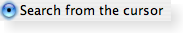

| Home · All Classes · Modules · QSS HELP · QSS 案例 · VER007 HOME |
该QRadioButton小工具提供了一个文本标籤的单选按钮。More...
该QRadioButton小工具提供了一个文本标籤的单选按钮。
一个QRadioButton是一个选项按钮，可以打开（选中）或关闭（未选中） 。单选按钮通常与选择了“一对多”呈现给用户。在一组单选按钮，在同一时间只有一个单选按钮可以检查，如果用户选择另一个按钮，则之前选中的按钮被关闭。
单选按钮autoExclusive在默认情况下。如果自动独家启用，属于同一个父控件单选按钮的行为，好像他们是同一个专属按钮组的一部分。如果需要多个专属按钮组对属于同一个父部件单选按钮，把它们放到一个QButtonGroup。
每当一个按钮打开或关闭它发出的toggled（）信号。连接到这个信号，如果你希望每次触发一个动作按钮的状态发生改变。使用isChecked（）以查看是否已选择了一个特定的按钮。
一样QPushButton，单选按钮显示文本和可选的小图标。该图标设置setIcon（ ） 。该文本可以在构造函数或设置setText（ ） 。快捷键可以首选使用的字符在文本中的＆符号前面的指定。例如：
QRadioButton *button = new QRadioButton("Search from the &cursor", this);
在这个例子中，快捷键是Alt+c。请参阅QShortcut有关详细信息的文档（显示的实际符号，使用“\u0026\u0026” ） 。
重要继承的成员：text（ ）setText（ ）text（ ）setDown（ ）isDown（ ）autoRepeat（ ）group（ ）setAutoRepeat（ ）toggle（ ）pressed（ ）released（ ）clicked（）和toggled（ ） 。
| A radio button shown in the Plastique widget style. | |
 |
A radio button shown in the Windows XP widget style. |
|  | A radio button shown in the Macintosh widget style. |
该parent的说法，如果不是没有，原因self通过Qt的，而不是PyQt的拥有。
构造一个单选按钮，用给定的parent，但没有文字或像素图。
该parent参数被传递到QAbstractButton构造函数。
该parent的说法，如果不是没有，原因self通过Qt的，而不是PyQt的拥有。
构造一个单选按钮，用给定的parent和text字符串。
该parent参数被传递到QAbstractButton构造函数。
从重新实现QObject.event（ ） 。
从重新实现QAbstractButton.hitButton（ ） 。
初始化option与其它的值QRadioButton。当他们需要一个这种方法是有用的子类QStyleOptionButton，但不希望在所有的信息填写自己。
See also QStyleOption.initFrom（ ） 。
从重新实现QWidget.minimumSizeHint（ ） 。
此功能被引入Qt的4.8 。
从重新实现QWidget.mouseMoveEvent（ ） 。
从重新实现QWidget.paintEvent（ ） 。
从重新实现QWidget.sizeHint（ ） 。
| PyQt 4.10.3 for X11 | Copyright © Riverbank Computing Ltd and Nokia 2012 | Qt 4.8.5 |